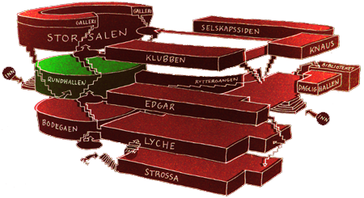

FindMyApp

Rundhallen er det første som møter en etter å ha gått inn hovedinngangen på Samfundet. Her står garderobevaktene klare og du finner informasjon om hva som foregår på Huset til enhver tid. Rundhallen er myldreplassen på Samfundet, og dessuten det letteste stedet å avtale å møtes dersom man går seg bort. Rundhallen er det roligste lokalet på huset, så det er perfekt for å samle gjengen og kjøpe den første pilsen. Lokalet har selvfølgelig en egen bar, og under den flotte lysekronen i midten ligger Samfundets grunnstein, lagt ned av Kronprins Olav i 1927. Prøv å stå oppå glassplata over steinen og hør på den merkelige akustikken som er akkurat der. Rundhallen var byggeprosjektet til UKA-07, og ble i den anledningen pusset opp.
Visste du at?
- Det går mange trapper ut fra hallen, men går du rett fram kommer du til Ryttergangen, som er gangen mellom Rundhallen og Daglighallen. De store og merkelige trinnene i trappen gjør den best egnet for hester, derav navnet. På veggen kan du se bilder malt av Knut Knaus, som også har dekorert flere steder på Samfundet, blant annet konsertlokalet Knaus.